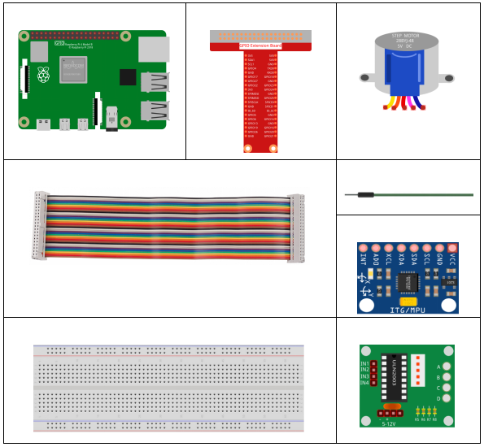
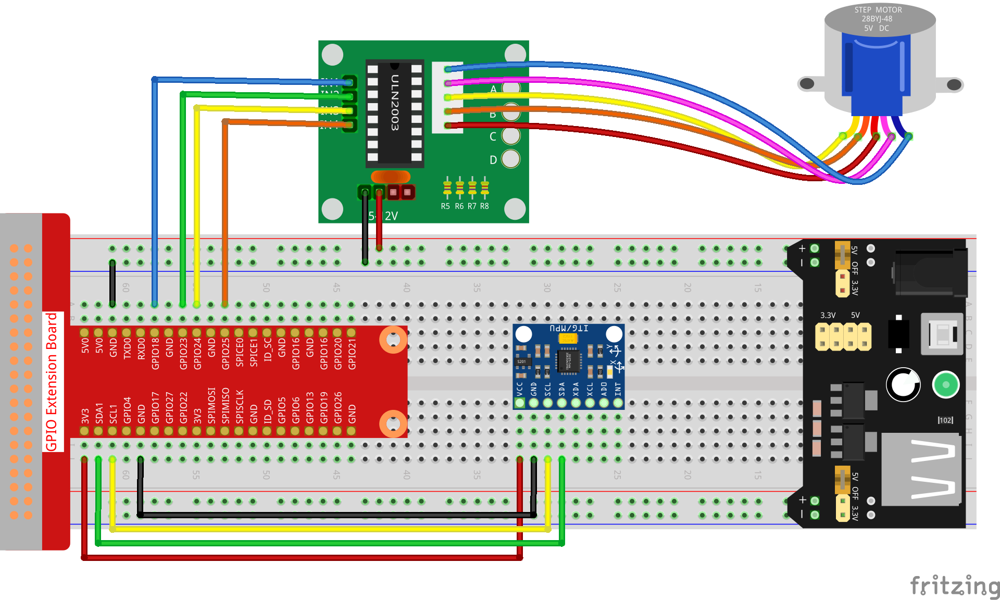

Note
Hello, welcome to the SunFounder Raspberry Pi & Arduino & ESP32 Enthusiasts Community on Facebook! Dive deeper into Raspberry Pi, Arduino, and ESP32 with fellow enthusiasts.
Why Join?
Expert Support: Solve post-sale issues and technical challenges with help from our community and team.
Learn & Share: Exchange tips and tutorials to enhance your skills.
Exclusive Previews: Get early access to new product announcements and sneak peeks.
Special Discounts: Enjoy exclusive discounts on our newest products.
Festive Promotions and Giveaways: Take part in giveaways and holiday promotions.
👉 Ready to explore and create with us? Click [here] and join today!
3.1.6 Motion Control
Introduction
In this lesson, we will make a simple motion sensing and controlling device. The MPU6050 is used as a sensor and the stepper motor as a controlled device. With the MPU6050 mounted on the glove, you can control the stepper motor by rotating your wrist.
Components
Schematic Diagram
T-Board Name |
physical |
wiringPi |
BCM |
GPIO18 |
Pin 12 |
1 |
18 |
GPIO23 |
Pin 16 |
4 |
23 |
GPIO24 |
Pin 18 |
5 |
24 |
GPIO25 |
Pin 22 |
6 |
25 |
SDA1 |
Pin 3 |
||
SCL1 |
Pin 5 |
Experimental Procedures
Step 1: Build the circuit.
{kind=link}
For C Language Users
Step 2: Go to the folder of the code.
cd ~/davinci-kit-for-raspberry-pi/c/3.1.6/
Step 3: Compile the code.
gcc 3.1.6_MotionControl.c -lwiringPi -lm
Step 4: Run the executable file.
sudo ./a.out
As the code runs, if the tilt angle of mpu6050 on the Y-axis is larger than 45 ℃, the stepper motor rotates anticlockwise; if less than -45 ℃, the stepper motor rotates clockwise.
Note
If it does not work after running, or there is an error prompt: "wiringPi.h: No such file or directory", please refer to C code is not working?.
Code Explanation
double mpu6050(){
acclX = read_word_2c(0x3B);
acclY = read_word_2c(0x3D);
acclZ = read_word_2c(0x3F);
acclX_scaled = acclX / 16384.0;
acclY_scaled = acclY / 16384.0;
acclZ_scaled = acclZ / 16384.0;
double angle=get_y_rotation(acclX_scaled, acclY_scaled, acclZ_scaled);
return angle;
}
mpu6050 gets the tilt angle in the direction of the Y-axis.
void rotary(char direction){
if(direction == 'c'){
for(int j=0;j<4;j++){
for(int i=0;i<4;i++)
{digitalWrite(motorPin[i],0x99>>j & (0x08>>i));}
delayMicroseconds(stepSpeed);
}
}
else if(direction =='a'){
for(int j=0;j<4;j++){
for(int i=0;i<4;i++)
{digitalWrite(motorPin[i],0x99<<j & (0x80>>i));}
delayMicroseconds(stepSpeed);
}
}
}
If the received direction key is 'c', the stepper motor rotates clockwise; if the key is 'a', the motor rotates anticlockwise. Refer to 1.3.3 Stepper Motor for more details about the calculation of the rotating direction of the stepper motor.
int main()
{
setup();
double angle;
while(1) {
angle = mpu6050();
if (angle >=45){rotary('a');}
else if (angle<=-45){rotary('c');}
}
return 0;
}
The tilt angle in the direction of the Y-axis is read from mpu6050, and if it’s larger than 45 ℃, the stepper motor rotates anticlockwise; if less than -45 ℃, the stepper motor rotates clockwise.
For Python Language Users
Step 2: Go to the folder of the code.
cd ~/davinci-kit-for-raspberry-pi/python/
Step 3: Run the executable file.
sudo python3 3.1.6_MotionControl.py
As the code runs, if the tilt angle of mpu6050 on the Y-axis is larger than 45 ℃, the stepper motor rotates anticlockwise; if less than -45 ℃, the stepper motor rotates clockwise.
Code
Note
You can Modify/Reset/Copy/Run/Stop the code below. But before that, you need to go to source code path like davinci-kit-for-raspberry-pi/python.
import RPi.GPIO as GPIO
import smbus
import math
import time
# Power management registers
power_mgmt_1 = 0x6b
power_mgmt_2 = 0x6c
bus = smbus.SMBus(1)
address = 0x68
bus.write_byte_data(address, power_mgmt_1, 0)
#Stepper motor pins
motorPin = (18,23,24,25)
rolePerMinute =15
stepsPerRevolution = 2048
stepSpeed = (60/rolePerMinute)/stepsPerRevolution
#mpu6050
def read_byte(adr):
return bus.read_byte_data(address, adr)
def read_word(adr):
high = bus.read_byte_data(address, adr)
low = bus.read_byte_data(address, adr+1)
val = (high << 8) + low
return val
def read_word_2c(adr):
val = read_word(adr)
if (val >= 0x8000):
return -((65535 - val) + 1)
else:
return val
def dist(a,b):
return math.sqrt((a*a)+(b*b))
def get_y_rotation(x,y,z):
radians = math.atan2(x, dist(y,z))
return -math.degrees(radians)
def get_x_rotation(x,y,z):
radians = math.atan2(y, dist(x,z))
return math.degrees(radians)
def mpu6050():
accel_xout = read_word_2c(0x3b)
accel_yout = read_word_2c(0x3d)
accel_zout = read_word_2c(0x3f)
accel_xout_scaled = accel_xout / 16384.0
accel_yout_scaled = accel_yout / 16384.0
accel_zout_scaled = accel_zout / 16384.0
angle=get_y_rotation(accel_xout_scaled, accel_yout_scaled, accel_zout_scaled)
return angle
#Stepper Motor
def rotary(direction):
if(direction == 'c'):
for j in range(4):
for i in range(4):
GPIO.output(motorPin[i],0x99>>j & (0x08>>i))
time.sleep(stepSpeed)
elif(direction == 'a'):
for j in range(4):
for i in range(4):
GPIO.output(motorPin[i],0x99<<j & (0x80>>i))
time.sleep(stepSpeed)
def setup():
GPIO.setwarnings(False)
GPIO.setmode(GPIO.BCM)
for i in motorPin:
GPIO.setup(i, GPIO.OUT)
def loop():
while True:
angle=mpu6050()
if angle >=45 :
rotary('a')
elif angle <=-45:
rotary('c')
def destroy():
GPIO.cleanup()
if __name__ == '__main__':
setup()
try:
loop()
except KeyboardInterrupt:
destroy()
Code Explanation
def mpu6050():
accel_xout = read_word_2c(0x3b)
accel_yout = read_word_2c(0x3d)
accel_zout = read_word_2c(0x3f)
accel_xout_scaled = accel_xout / 16384.0
accel_yout_scaled = accel_yout / 16384.0
accel_zout_scaled = accel_zout / 16384.0
angle=get_y_rotation(accel_xout_scaled, accel_yout_scaled, accel_zout_scaled)
return angle
mpu6050 gets the tilt angle in the direction of the Y-axis.
def rotary(direction):
if(direction == 'c'):
for j in range(4):
for i in range(4):
GPIO.output(motorPin[i],0x99>>j & (0x08>>i))
time.sleep(stepSpeed)
elif(direction == 'a'):
for j in range(4):
for i in range(4):
GPIO.output(motorPin[i],0x99<<j & (0x80>>i))
time.sleep(stepSpeed)
If the received direction key is 'c', the stepper motor rotates clockwise; if the key is 'a', the motor rotates anticlockwise. Refer to 1.3.3 Stepper Motor for more details about the calculation of the rotating direction of the stepper motor.
def loop():
while True:
angle=mpu6050()
if angle >=45 :
rotary('a')
elif angle <=-45:
rotary('c')
The tilt angle in the direction of the Y-axis is read from mpu6050, and if it’s larger than 45 ℃, rotary() is called to let the stepper motor rotate anticlockwise; if less than -45 ℃, the stepper motor rotates clockwise.